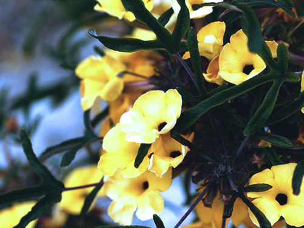
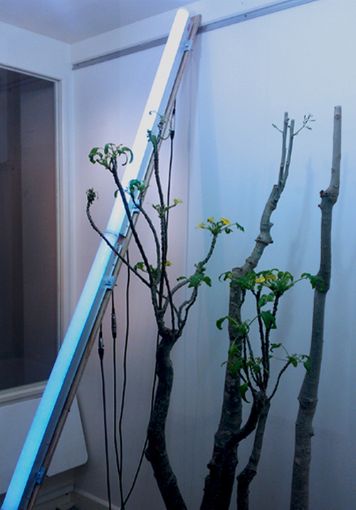

Détail de l'installation, Variation pour montée de sève, François Collin et Sabrina Issa, Sculpture en l'Île, Andrézy, 2013.
La variation de montée de sève est représentée sur un néon constitué de LEDs sur 2m50 de haut. L'intensité et le flux lumineux du néon varie de pair avec l'équilibre physiologique des plantes. Les 2 tirages de relevés de données représentent la montée de sève (en vert), mise en rapport avec les relevés climatiques du site (en rouge la température, en bleu l'humidité et en jaune la lumière).
Matériaux:
Plantes (Uncarina grandiflora et Moringa drouhardii) LED, montage électronique, capteurs de montée de sève dit de Granier TDP, 2 tirages A0
Dimensions : 6m2

Détail de l'installation, Relevés, Variation pour montée de sève, François Collin et Sabrina Issa, Sculpture en l'Île, tirage papier format 80 x 60 cm , Andrézy, 2013.